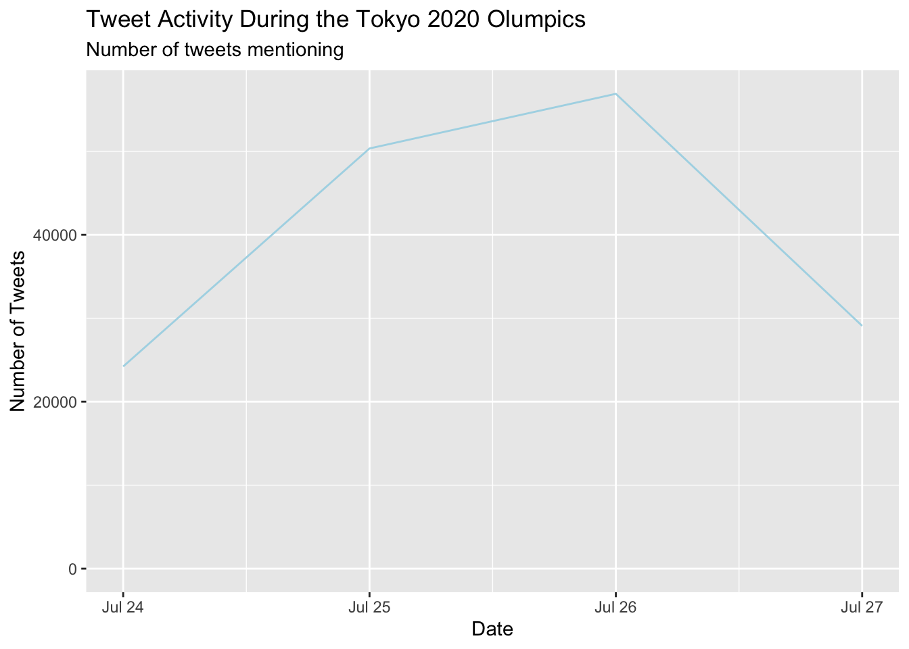
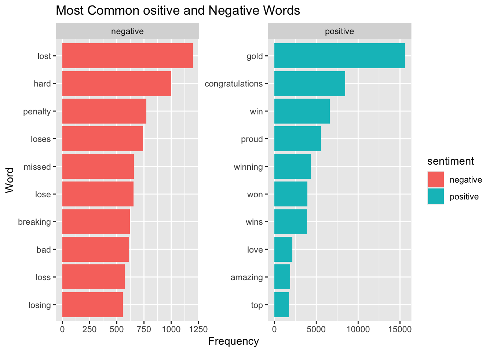
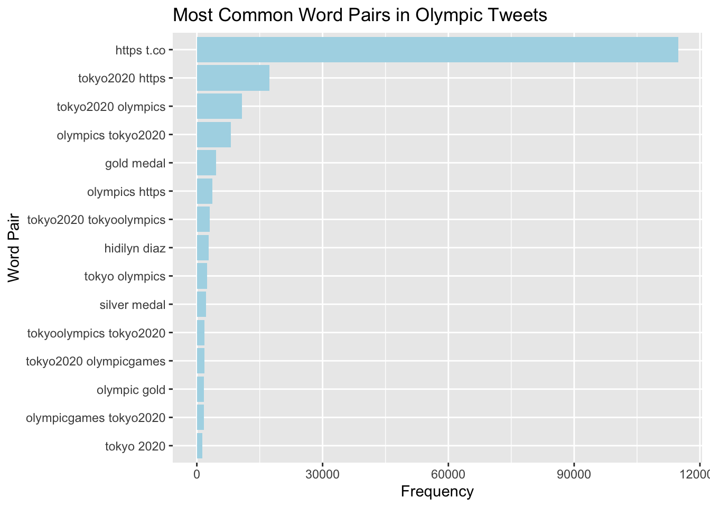

The Tokyo 2020 Olympic Games generated massive global attention, and social media platforms such as Twitter became an important place where people shared reactions, opinions, and excitement about the events. In this project, I analyze a dataset containing tweets about the Tokyo Olympics 2020.
### Research Questions:
1. When Were People Tweeting?
2. What Words Popped Up Most?
3. Were Tweets Positive or Negative?
4. What Word Pairs Showed Up?
## Data Preparation
Code
library(tidyverse)
── Attaching core tidyverse packages ──────────────────────── tidyverse 2.0.0 ──
✔ dplyr 1.2.0 ✔ readr 2.1.6
✔ forcats 1.0.1 ✔ stringr 1.6.0
✔ ggplot2 4.0.2 ✔ tibble 3.3.1
✔ lubridate 1.9.5 ✔ tidyr 1.3.2
✔ purrr 1.2.1
── Conflicts ────────────────────────────────────────── tidyverse_conflicts() ──
✖ dplyr::filter() masks stats::filter()
✖ dplyr::lag() masks stats::lag()
ℹ Use the conflicted package (<http://conflicted.r-lib.org/>) to force all conflicts to become errors
Warning: One or more parsing issues, call `problems()` on your data frame for details,
e.g.:
dat <- vroom(...)
problems(dat)
Rows: 160543 Columns: 16
── Column specification ────────────────────────────────────────────────────────
Delimiter: ","
chr (6): user_name, user_location, user_description, text, hashtags, source
dbl (6): id, user_followers, user_friends, user_favourites, retweets, favor...
lgl (2): user_verified, is_retweet
dttm (2): user_created, date
ℹ Use `spec()` to retrieve the full column specification for this data.
ℹ Specify the column types or set `show_col_types = FALSE` to quiet this message.
The dataset contains information about each tweet including the tweet text, user information, and the date tweet was posted.
~~~~~ To better analyze the text data, I create several new variables using string functions.
Regular expressions were also used to detect pattern such as hashtags (#), mentions (@), and retweets (^RT).
Understanding these patterns helps how users interact and structure tweets during major events.
When Were People Tweeting? One way to understand the popularity of the Olympics on Twitter is to examine how tweet volume changes over time.
Code
tweets |>mutate(date =as_date(date)) |>count(date) |>ggplot(aes(date, n)) +geom_line(color ="lightblue") +labs(title ="Tweet Activity During the Tokyo 2020 Olumpics",subtitle ="Number of tweets mentioning", x ="Date", y ="Number of Tweets" )
Warning: Removed 1 row containing missing values or values outside the scale range
(`geom_line()`).

The line jumps around a lot. Those peaks are probably medal ceremonies, upsets, or viral moments. We can see interest building on the 25th before peaking on the 26th, then dropping fast. This is the kind of pattern we would expect during a major events, with people tuning in and tweeting when something exciting happens.
What Words Popped Up most? I broke the tweets into individual words using unnest_tokens() and got rid of common stop words.
Obviously “olympics” and “Tokyo Olympics got lots of mentions.”Medal” and “gold” also seem bigger, showing fans were celebrating their favorite team winning or mentioning what their team got. The word “congratulation” also pops up, which shows they were tweeting and celebrating the wins.
Were Tweets Positive or Negative? I used Bing sentiment lexcion to check the emotional tone.
Code
bing <-get_sentiments("bing")tweet_words |>inner_join(bing, relationship ="many-to-many") |>count(sentiment, word, sort =TRUE) |>group_by(sentiment) |>slice_max(n, n =10) |>ungroup() |>ggplot(aes(x =fct_reorder(word, n), y = n, fill = sentiment)) +geom_col() +coord_flip() +facet_wrap(~ sentiment, scales ="free") +labs(title ="Most Common ositive and Negative Words",x ="Word",y ="Frequency" )
Joining with `by = join_by(word)`

alt text = This faceted bar chart shows the 10 most frequent positive and negative words from Olympic related tweets. The x-axis shows word frequency, while the y-axis lists the words. The chart has two panels. “lost” and “hard” got way more mentions in negative posts, showing that fans reacted to losses or tough moments. “penalty” and “losses” follow the same pattern. Overall, it looks like fans were quick to tweet when things went wrong for their team.
What Words Pairs Showed Up? Another useful text analysis technique is bigram analysis, which examines pairs of words that frequently appear together.
bigrams |>slice_max(n, n =15) |>unite(bigram, word1, word2, sep =" ") |>ggplot(aes(n, reorder(bigram, n))) +geom_col(fill ="lightblue") +labs( title ="Most Common Word Pairs in Olympic Tweets", x ="Frequency",y ="Word Pair" )

This chart shows the most common word pairs in Olympic tweets. “https.t.co” and “tokyo2020 https” tops the list, meaning people were sharing link a lot. “Tokyo2020” and “olympics” comes next, which make sense since that was the main event. We also see more specific moments like “Hidilyn Diaz” paired with “silver medal”. In short, the conversation mixed link sharing with talking about the Games and big medal wins.
Conclusion
The Tokyo Twitter conversation had a clear rhythm, with tweet volume spiked during big moments like medal wins. Fans mostly celebrated with words like “gold” and “congratulations” but also shared the tough moments with words like “lost” and “hard” showing up in sentiment analysis. links also were everywhere as people shred highlights and updates.
Even without stadium crowds, Twitter became the virtual stands where fans cheered, reacted, and made their voices heard.
Source Code
---title: "Public Reactions to the Tokyo 2020 Olympics on Twitter"author: "Romina Amirian"date: "2026-03-10"---\## Introduction\The Tokyo 2020 Olympic Games generated massive global attention, and social media platforms such as Twitter became an important place where people shared reactions, opinions, and excitement about the events. In this project, I analyze a dataset containing tweets about the Tokyo Olympics 2020.\\### Research Questions:1\. When Were People Tweeting?2\. What Words Popped Up Most?3\. Were Tweets Positive or Negative?4\. What Word Pairs Showed Up?\\## Data Preparation```{r}library(tidyverse)library(tidytext)library(stringr)library(lubridate)library(wordcloud)library(RColorBrewer)```\```{r}# Load datatweets <-read_csv("/Users/rominaamirian/downloads/tokyo_2020_tweets.csv")```The dataset contains information about each tweet including the tweet text, user information, and the date tweet was posted.\~\~\~\~\~ To better analyze the text data, I create several new variables using *string functions*.```{r}#create new variablestweets <- tweets |>mutate(tweet_length =str_length(text), has_hashtag =str_detect(text, "#"),mention_count =str_count(text, "@"),retweet_flag =str_detect(text, "^RT") )```These variables measure:- the length of each tweet- whether a tweet contains a hashtag- the number of mentions in each tweet- whether the tweet is a retweetRegular expressions were also used to detect pattern such as hashtags (#), mentions (\@), and retweets (\^RT).Understanding these patterns helps how users interact and structure tweets during major events.**When Were People Tweeting?** One way to understand the popularity of the Olympics on Twitter is to examine how tweet volume changes over time.```{r}tweets |>mutate(date =as_date(date)) |>count(date) |>ggplot(aes(date, n)) +geom_line(color ="lightblue") +labs(title ="Tweet Activity During the Tokyo 2020 Olumpics",subtitle ="Number of tweets mentioning", x ="Date", y ="Number of Tweets" )```The line jumps around a lot. Those peaks are probably medal ceremonies, upsets, or viral moments. We can see interest building on the 25th before peaking on the 26th, then dropping fast. This is the kind of pattern we would expect during a major events, with people tuning in and tweeting when something exciting happens.**What Words Popped Up most?** I broke the tweets into individual words using *unnest_tokens()* and got rid of common stop words.```{r}tweet_words <- tweets |>unnest_tokens(word, text)|>anti_join(stop_words) |>filter(!word %in%c("tokyo", "olympic", "tokyo2020"))word_counts <- tweet_words |>count(word, sort =TRUE)```A word cloud makes the patterns easy to spot.```{r}wordcloud(words = word_counts$word, freq = word_counts$n, max.words =150,random.order =FALSE, rot.per =0.35,scale =c(3, 0.5),colors =brewer.pal(6, "Dark2"))```Obviously “olympics” and “Tokyo Olympics got lots of mentions.”Medal” and “gold” also seem bigger, showing fans were celebrating their favorite team winning or mentioning what their team got. The word “congratulation” also pops up, which shows they were tweeting and celebrating the wins.**Were Tweets Positive or Negative?** I used Bing sentiment lexcion to check the emotional tone.```{r}bing <-get_sentiments("bing")tweet_words |>inner_join(bing, relationship ="many-to-many") |>count(sentiment, word, sort =TRUE) |>group_by(sentiment) |>slice_max(n, n =10) |>ungroup() |>ggplot(aes(x =fct_reorder(word, n), y = n, fill = sentiment)) +geom_col() +coord_flip() +facet_wrap(~ sentiment, scales ="free") +labs(title ="Most Common ositive and Negative Words",x ="Word",y ="Frequency" )```*alt text* = This faceted bar chart shows the 10 most frequent positive and negative words from Olympic related tweets. The x-axis shows word frequency, while the y-axis lists the words. The chart has two panels. “lost” and “hard” got way more mentions in negative posts, showing that fans reacted to losses or tough moments. “penalty” and “losses” follow the same pattern. Overall, it looks like fans were quick to tweet when things went wrong for their team.**What Words Pairs Showed Up?** Another useful text analysis technique is bigram analysis, which examines pairs of words that frequently appear together.```{r}bigrams <- tweets |>unnest_tokens(bigram, text, token ="ngrams", n =2) |>separate(bigram, c("word1", "word2"), sep =" ") |>filter(!word1 %in% stop_words$word &!word2 %in% stop_words$word) |>count(word1, word2, sort =TRUE)``````{r}bigrams |>slice_max(n, n =15) |>unite(bigram, word1, word2, sep =" ") |>ggplot(aes(n, reorder(bigram, n))) +geom_col(fill ="lightblue") +labs( title ="Most Common Word Pairs in Olympic Tweets", x ="Frequency",y ="Word Pair" )```This chart shows the most common word pairs in Olympic tweets. “https.t.co” and “tokyo2020 https” tops the list, meaning people were sharing link a lot. “Tokyo2020” and “olympics” comes next, which make sense since that was the main event. We also see more specific moments like “Hidilyn Diaz” paired with “silver medal”. In short, the conversation mixed link sharing with talking about the Games and big medal wins.**Conclusion**The Tokyo Twitter conversation had a clear rhythm, with tweet volume spiked during big moments like medal wins. Fans mostly celebrated with words like “gold” and “congratulations” but also shared the tough moments with words like “lost” and “hard” showing up in sentiment analysis. links also were everywhere as people shred highlights and updates.Even without stadium crowds, Twitter became the virtual stands where fans cheered, reacted, and made their voices heard.